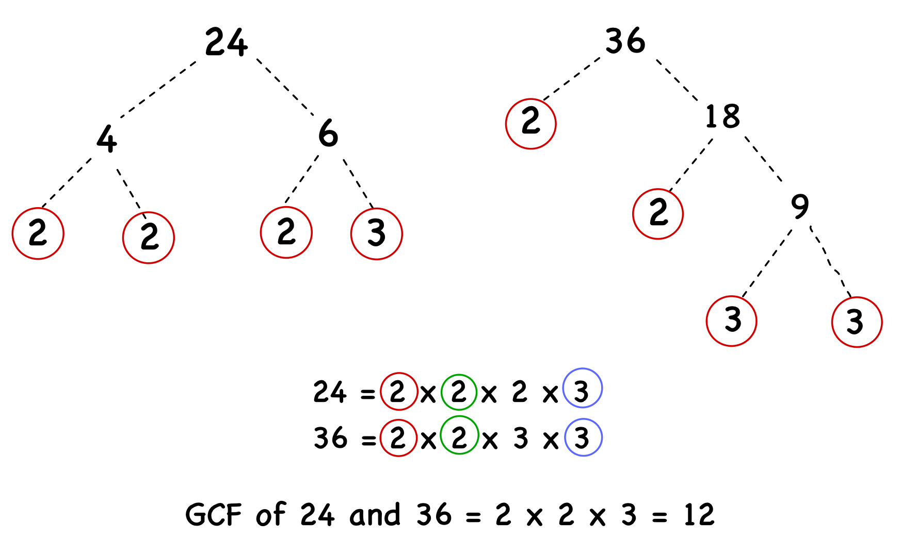
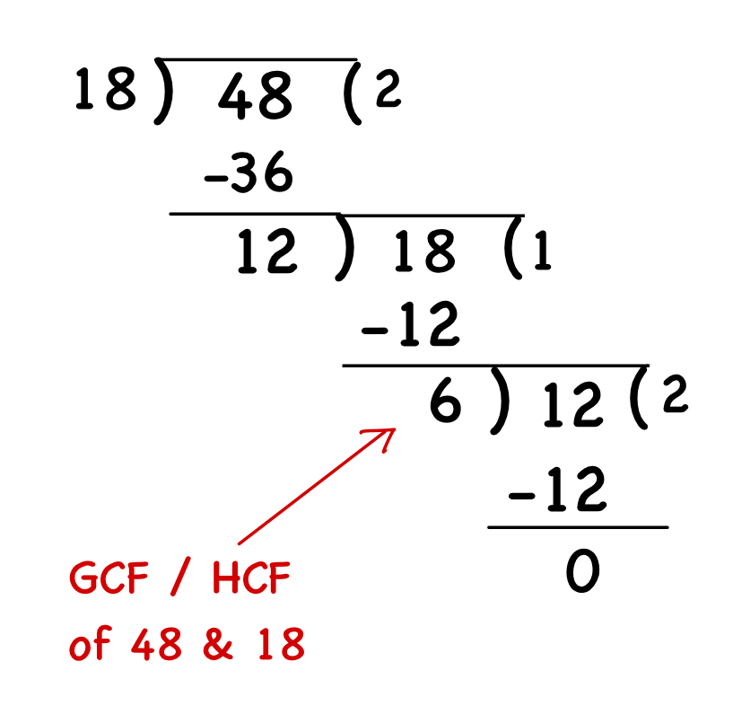

Highest Common Factor :
The Greatest Common Factor (HCF), also known as the Greatest Common Factor (GCF) or Greatest Common Divisor (GCD), is the largest positive integer that divides two or more numbers without leaving a remainder. In simpler terms, it is the biggest number that all the given numbers share as a factor.
There are two common methods to find the HCF: Prime Factorisation and Division Method.
Prime Factorisation Method:
The prime Factorisation method involves breaking down each number into its prime factors and then identifying the common factors.
Steps:
- Find the Prime Factors: Use a factor tree to break down each number into its prime factors.
- List the Prime Factors: Write down the prime factors for each number.
- Identify Common Factors: Look for the prime factors that appear in both lists.
- Multiply Common Factors: Multiply these common prime factors together to find the HCF.
Example: Finding HCF of 24 and 36
- Prime Factorisation of 24: Used factor tree to do prime factorisation.
- Prime Factorisation of 36: Used factor tree to do prime factorisation.
- Common Prime Factors: From 24 = 23 × 3 and 36 = 22 × 32, the common prime factors are:
- 2 (maximum power is 2)
- 3 (maximum power is 1)
- Calculate HCF:
- Multiply the common prime factors: HCF = 22 × 31 = 12.
So, the HCF of 24 and 36 is 12. 
- Multiply the common prime factors: HCF = 22 × 31 = 12.
Division Method :
The division method involves dividing the numbers by their common factors until no further division is possible.
Steps:
- Divide the bigger number by the smaller number.
- If you get a remainder, divide the smaller number by that remainder.
- Keep dividing until you get a remainder of zero.
- The last number you divided by is the HCF!
Example: Finding HCF of 48 and 18.
- Divide the larger number (48) by the smaller number (18) : 48 ÷ 18 = 2 remainder 12.
- Replace the larger number with the smaller number and divide again:
- Now divide 18 by the remainder 12: 18 ÷ 12 = 1 remainder 6
- Repeat the process with the new pair:
- Divide 12 by 6: 12 ÷ 6 = 2 remainder 0.
- Stop when the remainder is 0:
- The divisor at this step (6) is the HCF.
So, HCF of 48 and 18 = 6.
Co-prime Numbers :
Two numbers are called coprime if their highest common factor (HCF) is 1. This means they have no common factors other than 1, even if they are not prime themselves.
Example:15 and 28 are co-prime because their factors are :
15 : 1, 3, 5, 15 and 28 : 1, 2, 4, 7 ,14, 28. The only common factor is 1.